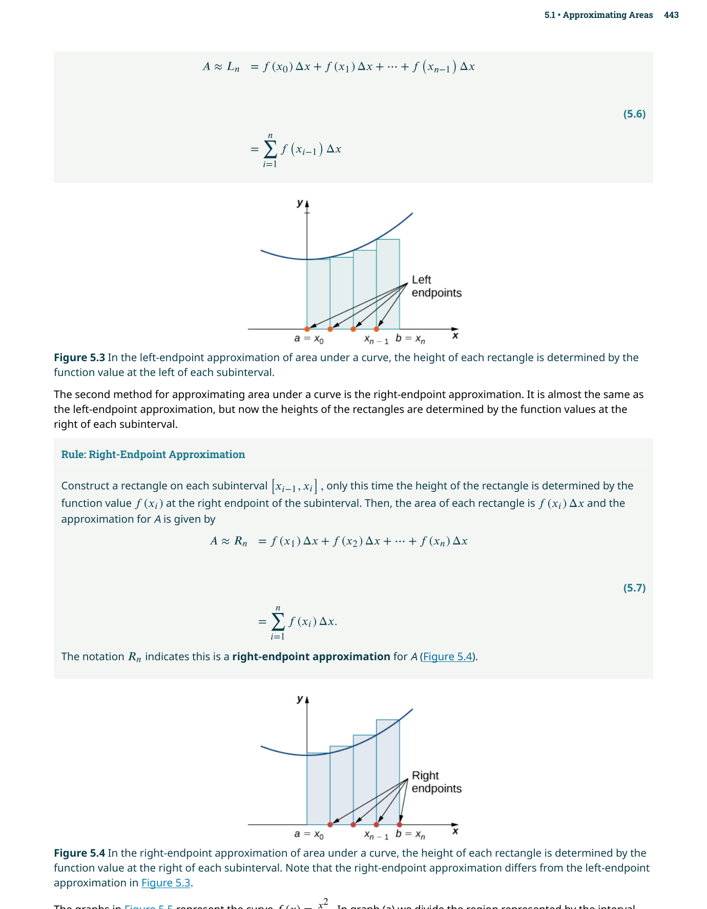
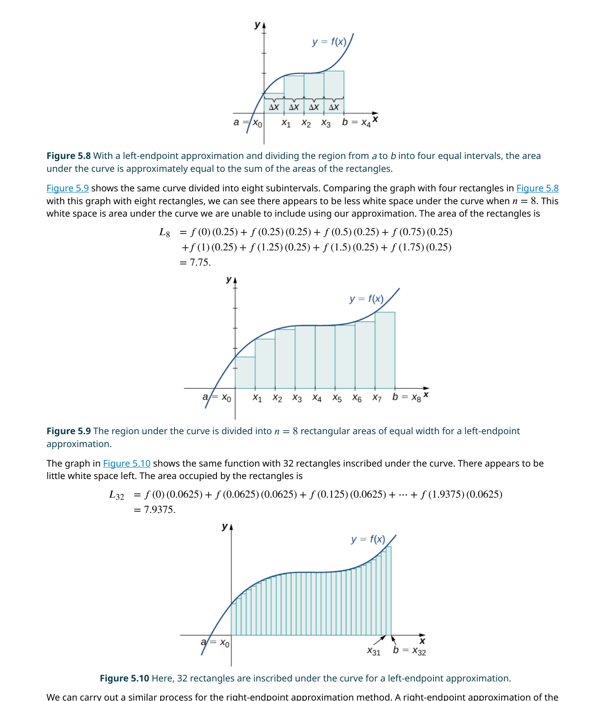
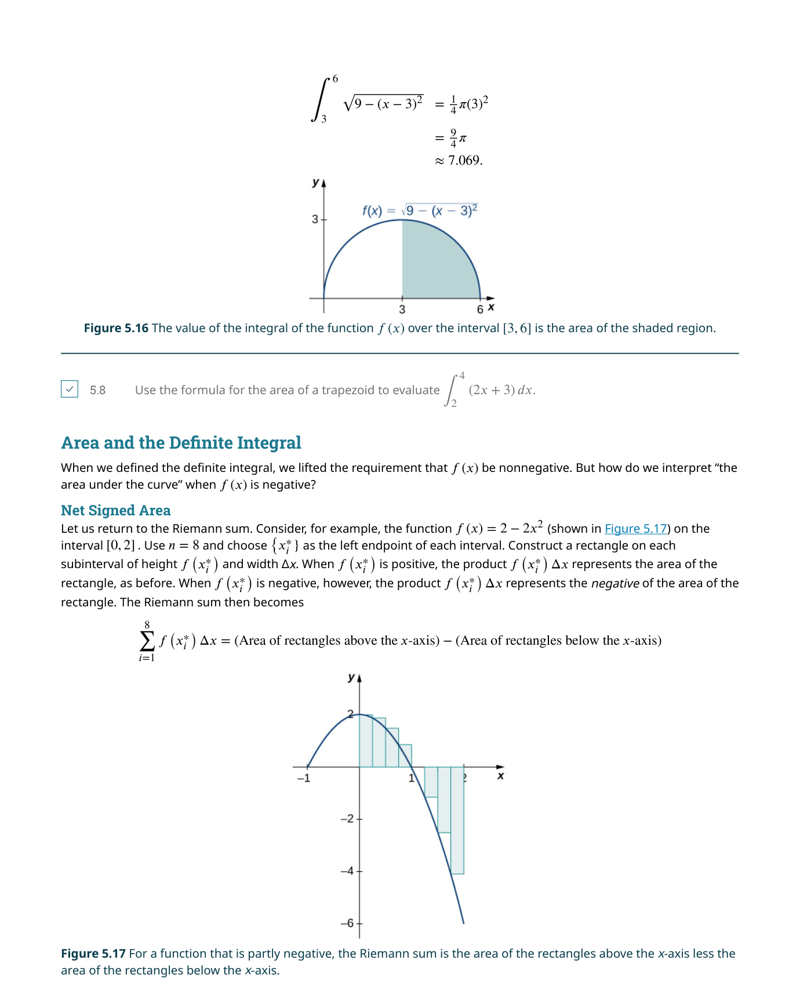
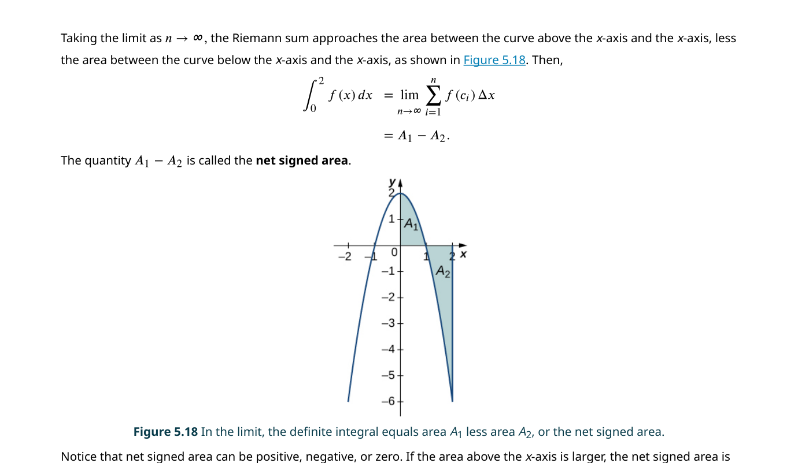
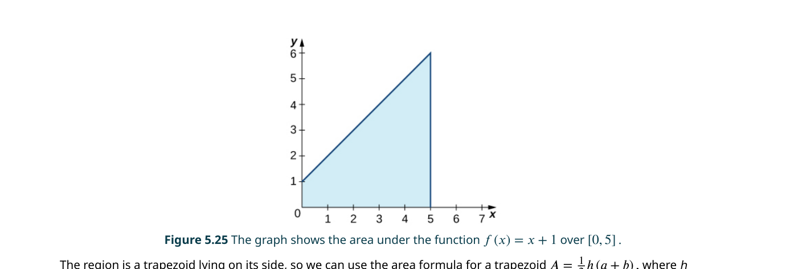
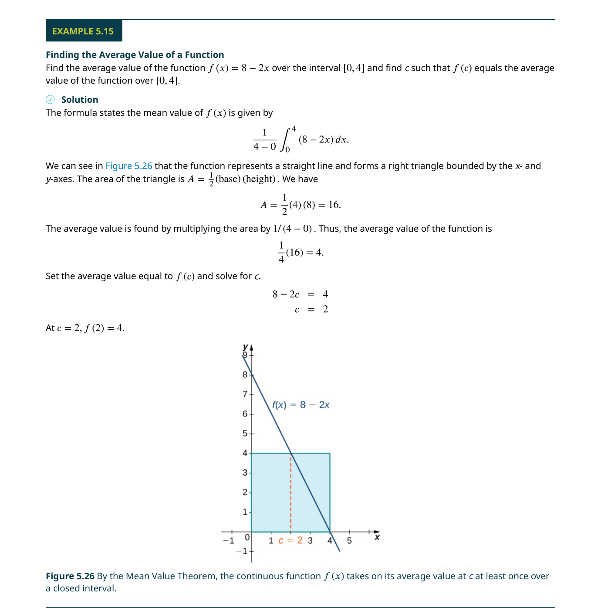
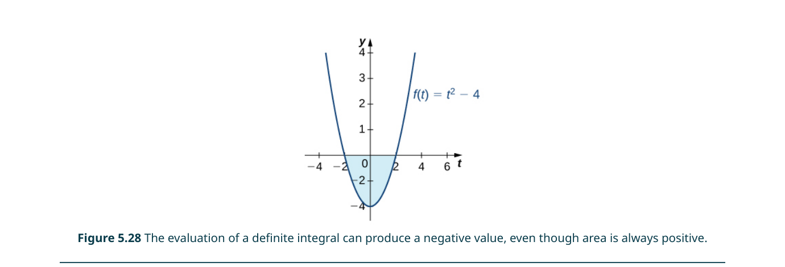
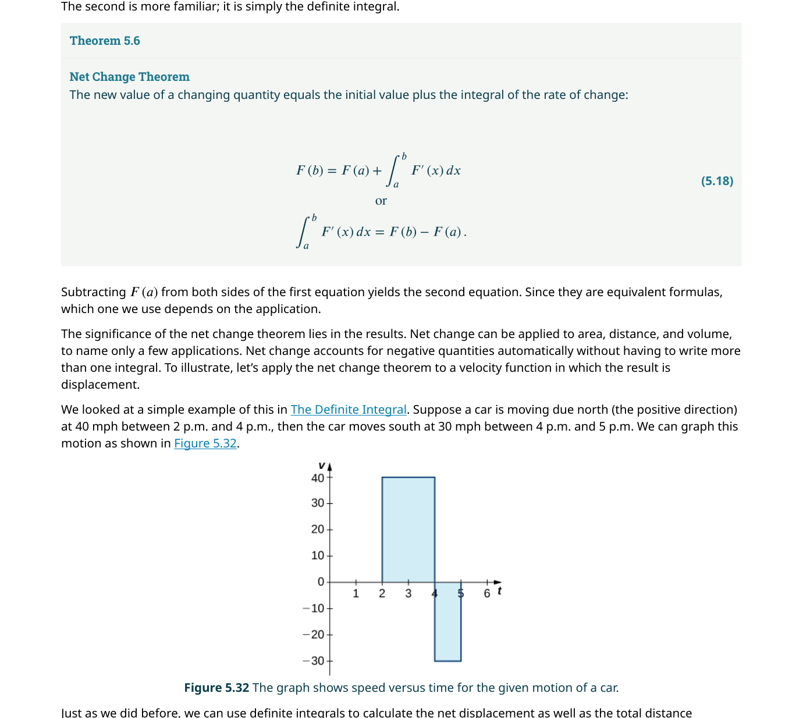
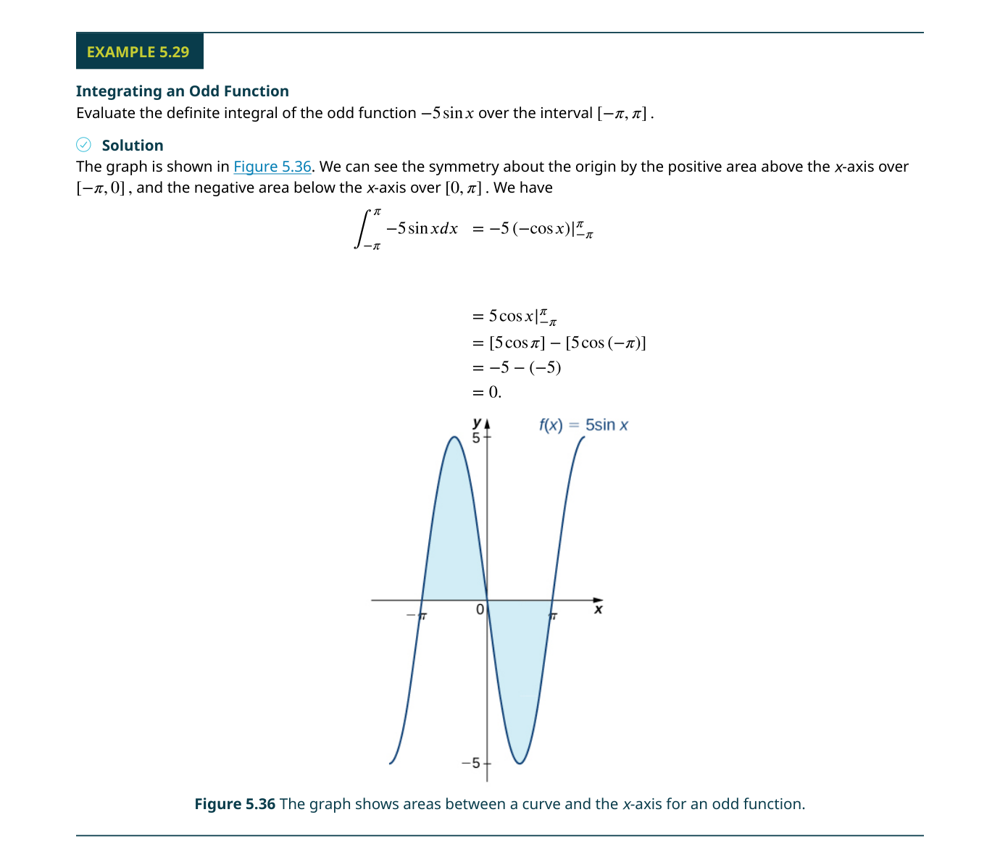
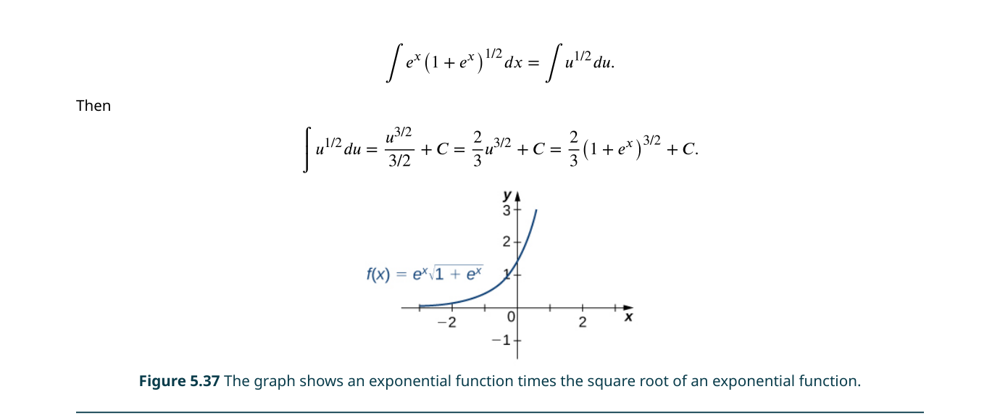

積分
📌 本章要解決的核心問題
如果我們知道一個物體在每一瞬間的速度，如何求出它在某段時間內移動的總距離？如果我們知道一個函數的變化率，如何還原出這個函數本身？這些問題的答案都在積分（integration）之中。積分是微積分的第二塊基石——如果說微分（第 3–4 章）是研究「瞬時變化」，那麼積分就是研究「累積總和」。本章從面積近似的樸素想法出發，逐步建立定積分的嚴格定義，然後揭示微積分中最偉大的發現：微分和積分互為逆運算——這就是微積分基本定理（Fundamental Theorem of Calculus）。
🔑 關鍵概念（10 條）
- Σ 記號（Sigma notation）：$\sum_{i=1}^{n} a_i$——用簡潔符號表達長串加法
- 黎曼和（Riemann sum）：$\sum_{i=1}^{n} f(x_i^*)\Delta x$——用矩形面積逼近曲線下面積
- 定積分（Definite integral）：$\int_a^b f(x)\,dx = \lim_{n\to\infty}\sum_{i=1}^{n} f(x_i^*)\Delta x$
- 淨符號面積（Net signed area）：$x$ 軸上方的面積為正，下方的面積為負
- 積分均值定理（MVT for Integrals）：存在 $c$ 使 $f(c) = f_{\text{ave}}$
- FTC Part 1：$\frac{d}{dx}\int_a^x f(t)\,dt = f(x)$——微分「取消」積分
- FTC Part 2（求值定理）：$\int_a^b f(x)\,dx = F(b) - F(a)$——用反導數求定積分
- 淨變化定理（Net Change Theorem）：$\int_a^b F'(x)\,dx = F(b) - F(a)$
- 代換法（Substitution）：積分的「連鎖律逆運算」——$\int f(g(x))g'(x)\,dx = \int f(u)\,du$
- 特殊函數積分公式：指數、對數、反三角函數的標準積分形式
🧭 本章推理地圖
面積的直覺：黎曼和（§5.1） → 極限收斂到 定積分（§5.2） → 微積分基本定理（§5.3）揭示微分與積分互為逆運算 → 由此推導 基本積分公式（§5.4），建立積分工具箱 → 代換法（§5.5）為第一個系統性積分技巧 → 指數／對數／反三角的積分（§5.6–§5.7）擴展可積函數範圍 → 為第 6 章積分應用（Ch6）與第 7 章進階技巧（Ch7）奠定基礎
5.1 面積近似（Approximating Areas）
阿基米德（Archimedes）早在兩千多年前就嘗試計算不規則形狀的面積。他的方法——後人稱為窮竭法（method of exhaustion）——是用愈來愈小、面積可精確計算的形狀（三角形、矩形）去填滿一個曲線所包圍的區域，從而得到愈來愈準確的近似值。本章的第一節正是以同樣的精神開始：我們用矩形來逼近曲線下方的面積。
設 $f(x)$ 是定義在閉區間 $[a, b]$ 上的連續、非負函數。我們想知道由 $y = f(x)$（上）、$x$ 軸（下）、$x = a$（左）、$x = b$（右）所圍成區域的面積 $A$。直接的幾何公式無法處理彎曲的上邊界——這就是我們需要積分的理由。

Σ 記號（Sigma Notation）
在用矩形近似面積之前，我們需要一個簡潔的方式來表達長串數字的加法。希臘字母大寫 sigma（Σ）就是為此設計的。例如，$\sum_{i=1}^{20} i$ 表示 $1+2+3+\cdots+20$。一般形式 $\sum_{i=m}^{n} a_i$ 的意思是：讓索引 $i$ 從 $m$ 跑到 $n$，每次都把 $a_i$ 的值加進總和中。索引 $i$ 稱為啞變數（dummy variable）——它只負責計數，本身不影響最終結果。
$\displaystyle\sum_{i=1}^{n} c = nc$（常數的加法）
$\displaystyle\sum_{i=1}^{n} c a_i = c\sum_{i=1}^{n} a_i$（常數可提出）
$\displaystyle\sum_{i=1}^{n} (a_i \pm b_i) = \sum_{i=1}^{n} a_i \pm \sum_{i=1}^{n} b_i$（和的加法 = 加法的和）
更進一步，數學家早已推導出常見冪次和的封閉公式：（1）$\sum_{i=1}^{n} i = \frac{n(n+1)}{2}$；（2）$\sum_{i=1}^{n} i^2 = \frac{n(n+1)(2n+1)}{6}$；（3）$\sum_{i=1}^{n} i^3 = \left[\frac{n(n+1)}{2}\right]^2$。這些公式是計算黎曼和極限的關鍵工具——沒有它們，我們將被困在無窮無盡的代數運算中。
試想你需要計算 $1^2 + 2^2 + \cdots + 100^2$。手算幾乎不可能，但代入公式 $\frac{100 \cdot 101 \cdot 201}{6} = 338,350$ 只需一秒。Σ 記號不僅讓表達更簡潔，更讓我們能借助已知的封閉公式直接得出結果——這在後續取極限時至關重要。
🎮 互動模型：Riemann 和 — 矩形逼近曲線下面積
拖動 n 滑桿增加矩形數量，切換左/右/中端點，觀察近似面積如何趨近精確值。點擊「n → 50」觀看收斂動畫。
左端點與右端點近似
把 $[a, b]$ 分割為 $n$ 個等寬的子區間，每個寬度為 $\Delta x = \frac{b-a}{n}$。分割點為 $x_0 = a, x_1 = a+\Delta x, \ldots, x_n = b$。在第 $i$ 個子區間 $[x_{i-1}, x_i]$ 上建一個矩形：寬度 $\Delta x$，高度取決於我們選擇區間內的哪個點來計算 $f$ 的值。

左端點近似（left-endpoint approximation）$L_n$：矩形高度取 $f(x_{i-1})$，即每個子區間左端點的函數值。右端點近似（right-endpoint approximation）$R_n$：矩形高度取 $f(x_i)$，即右端點的函數值。如果 $f$ 在 $[a, b]$ 上遞增，則 $L_n$ 會低估真實面積、$R_n$ 會高估；如果 $f$ 遞減，則情況相反。
很多學生死記「左端點 = 低估」——這只在 $f$ 遞增時成立！對於遞減函數（如 $f(x)=\frac{1}{x}$ 在 $[1, 2]$），左端點反而會高估。正確的判斷方式是：觀察函數在區間內的單調性，然後思考矩形是「突出」還是「短缺」。永遠先畫圖再下結論。

黎曼和（Riemann Sums）
左右端點只是特例。更一般的想法是：在每個子區間 $[x_{i-1}, x_i]$ 中任意選擇一個點 $x_i^*$，以 $f(x_i^*)$ 作為矩形高度。這樣的總和 $\sum_{i=1}^{n} f(x_i^*)\Delta x$ 稱為黎曼和（Riemann sum），以 19 世紀數學家伯恩哈德·黎曼（Bernhard Riemann）命名。
如果我們在每個子區間中刻意選擇使 $f$ 取最大值的點，則得到上和（upper sum）$U_n$——它總是高估真實面積。反之，選擇使 $f$ 取最小值的點，則得到下和（lower sum）$L_n$——它總是低估。上和與下和為真實面積提供了一個可靠的上下邊界：$L_n \leq A \leq U_n$。
📝 範例
📝 範例 5.5：求 $f(x)=10-x^2$ 在 $[1,2]$ 上 $n=4$ 的下和$\Delta x = \frac{2-1}{4} = 0.25$，子區間：$[1, 1.25], [1.25, 1.5], [1.5, 1.75], [1.75, 2]$。由於 $f'(x) = -2x < 0$（遞減），下和應使用右端點。
$f(1.25)=8.4375, f(1.5)=7.75, f(1.75)=6.9375, f(2)=6$
下和 $L = 0.25(8.4375+7.75+6.9375+6) = 0.25 \times 29.125 = 7.28125$
這個數值小於真實面積（約 7.33），確實是一個低估。
隨著 $n \to \infty$，所有這些近似——無論是左端點、右端點、上和、下和——都趨向同一個極限值。這個觀察正是定積分定義的基礎。我們將在第 5.2 節用這個極限正式定義定積分。
5.2 定積分（The Definite Integral）
定積分（definite integral）是微積分中最核心的概念之一。它將黎曼和的極限形式化為一個新的數學物件：$\int_a^b f(x)\,dx$。這個記號中的 $\int$ 是一個拉長的 S，源自拉丁文「summa」（總和），由萊布尼茲（Gottfried Wilhelm Leibniz）在 17 世紀末引入。
定義中的各個部分都有特定的名稱：$f(x)$ 稱為被積函數（integrand）；$a$ 和 $b$ 分別稱為積分下限與積分上限（limits of integration）；$dx$ 中的 $x$ 稱為積分變數（variable of integration）——它也是一個啞變數，$\int_a^b f(x)\,dx = \int_a^b f(t)\,dt$。定積分的結果是一個數，這與不定積分（反導數）返回一族函數有根本的不同。
在積分上下文中，「limit」一詞有兩個完全不同的意思：（1）積分上下限 $a$ 和 $b$（limits of integration）是指積分的端點；（2）$n \to \infty$ 時的極限（limit of a sum）是指黎曼和趨近的過程。初學者在閱讀課本時必須根據上下文區分這兩種用法。
定理 5.1（連續函數的可積性）：若 $f$ 在 $[a, b]$ 上連續，則 $f$ 在 $[a, b]$ 上可積。更進一步，只有有限個跳躍不連續點的函數通常也是可積的——這意味著分段連續函數（piecewise continuous functions）也在積分的勢力範圍內。

淨符號面積（Net Signed Area）
定積分最自然的幾何解釋是淨符號面積：$x$ 軸上方的區域貢獻正面積，$x$ 軸下方的區域貢獻負面積。因此 $\int_a^b f(x)\,dx = A_1 - A_2$，其中 $A_1$ 是軸上方面積，$A_2$ 是軸下方面積。這意味著定積分可以是負數（如果曲線大部分在 $x$ 軸下方），也可以是零（如果正負面積恰好相等）。

與淨面積相對的概念是總面積（total area）：$\int_a^b |f(x)|\,dx = A_1 + A_2$。總面積總是正數。區分這兩者在實際應用中至關重要——例如，從速度函數求位移時用淨面積（位移有方向），求總行駛距離時用總面積（距離永遠為正）。
📝 範例
📝 範例 5.9：求 $f(x)=2x-6$ 在 $[0,6]$ 上的淨符號面積$f(x)=2x-6$ 的根為 $x=3$。在 $[0,3]$ 上 $f(x) \leq 0$（軸下方），在 $[3,6]$ 上 $f(x) \geq 0$（軸上方）。
三角形 $A_2$（軸下）：底 $=3$，高 $=|f(0)|=6$，面積 $= \frac{1}{2} \cdot 3 \cdot 6 = 9$
三角形 $A_1$（軸上）：底 $=3$，高 $=f(6)=6$，面積 $= \frac{1}{2} \cdot 3 \cdot 6 = 9$
淨符號面積 $= A_1 - A_2 = 9 - 9 = 0$
但總面積 $= A_1 + A_2 = 18$。
定積分的性質
定積分有一組非常實用的運算性質，可以大大簡化計算：
$\displaystyle\int_a^a f(x)\,dx = 0$（上下限相同，積分為零）
$\displaystyle\int_b^a f(x)\,dx = -\int_a^b f(x)\,dx$（上下限互換，變號）
$\displaystyle\int_a^b [f(x) \pm g(x)]\,dx = \int_a^b f(x)\,dx \pm \int_a^b g(x)\,dx$
$\displaystyle\int_a^b c f(x)\,dx = c\int_a^b f(x)\,dx$（常數可提出）
$\displaystyle\int_a^b f(x)\,dx = \int_a^c f(x)\,dx + \int_c^b f(x)\,dx$（區間可拆分）
若 $f(x) \geq g(x)$ 在 $[a, b]$ 上，則 $\int_a^b f(x)\,dx \geq \int_a^b g(x)\,dx$。這個看起來簡單的性質讓我們可以在不求積分的情況下比較兩個積分的大小——例如證明 $\int_0^1 \sqrt{1+x^2}\,dx \geq \int_0^1 1\,dx = 1$（因為 $\sqrt{1+x^2} \geq 1$）。在考試中，這類比較題經常出現。
函數的平均值（Average Value of a Function）
離散數據的平均值很簡單：把所有數加起來除以個數。但一個函數在區間 $[a, b]$ 上取無窮多個值，如何求「平均值」？答案是：$f_{\text{ave}} = \frac{1}{b-a}\int_a^b f(x)\,dx$。這個公式的直覺是：先求曲線下的總面積（$\int_a^b f(x)\,dx$），再除以區間長度——就像把總和除以個數一樣。

📝 範例
📝 範例 5.14：求 $f(x)=x+4$ 在 $[0,3]$ 上的平均值$\int_0^3 (x+4)\,dx$ 對應梯形面積：$A = \frac{1}{2}(4+7) \cdot 3 = 16.5$
$f_{\text{ave}} = \frac{1}{3-0} \cdot 16.5 = 5.5$
這意味著雖然 $f(x)$ 在 4 到 7 之間變化，但它在這個區間上的「平均高度」是 5.5。
5.3 微積分基本定理（The Fundamental Theorem of Calculus）
如果說整個微積分課程只能記住一個定理，那就是微積分基本定理（Fundamental Theorem of Calculus, FTC）。這個定理揭示了微分和積分之間的深刻關係——它們互為逆運算，就像加法和減法、乘法和除法一樣。這個發現歸功於牛頓（Isaac Newton）和萊布尼茲（Gottfried Wilhelm Leibniz），被公認為人類智力史上最偉大的成就之一。
積分均值定理（Mean Value Theorem for Integrals）
在陳述 FTC 之前，我們需要一個輔助定理。積分均值定理說：若 $f$ 在 $[a, b]$ 上連續，則存在至少一個 $c \in [a, b]$ 使得 $f(c) = f_{\text{ave}} = \frac{1}{b-a}\int_a^b f(x)\,dx$。換句話說，函數在其連續區間上一定會「經過」它的平均值至少一次。

FTC Part 1 的證明需要用到「在一個很小的區間上，函數的積分平均等於函數在區間內某點的值」。積分均值定理恰好提供了這個保證。沒有它，FTC 的嚴格證明就缺少了一塊關鍵的拼圖。
FTC Part 1：積分的微分
定義一個新函數 $g(x) = \int_a^x f(t)\,dt$。注意：$g(x)$ 的輸入是積分的上限——對於每一個 $x$，$g(x)$ 計算從 $a$ 到 $x$ 之間 $f$ 的定積分（一個數）。那麼 FTC Part 1 告訴我們一件驚人的事：
這句話的意思是：如果你先對 $f$ 做積分（從 $a$ 到 $x$），然後再對結果微分，你會回到原來的 $f(x)$。微分「取消」了積分的效果。這也證明了一個深遠的事實：每個連續函數都有反導數——$g(x) = \int_a^x f(t)\,dt$ 就是 $f$ 的一個反導數。
📝 範例
📝 範例 5.17：FTC1 基本用法若 $g(x) = \int_1^x (t^3+1)\,dt$，求 $g'(x)$。
解：直接應用 FTC1：$g'(x) = x^3+1$。不需要先求出積分再微分——這就是 FTC1 的威力。
當積分上限不是簡單的 $x$ 而是某個函數 $u(x)$ 時，需要結合連鎖律（chain rule）：$\frac{d}{dx}\int_a^{u(x)} f(t)\,dt = f(u(x)) \cdot u'(x)$。如果上下限都是函數：$\frac{d}{dx}\int_{v(x)}^{u(x)} f(t)\,dt = f(u(x))u'(x) - f(v(x))v'(x)$。
📝 範例
📝 範例 5.18–5.19：結合連鎖律（a）若 $F(x) = \int_1^{x^2} \cos t\,dt$，則 $F'(x) = \cos(x^2) \cdot 2x$
（b）若 $F(x) = \int_x^{x^2} t^3\,dt$，先拆分為 $\int_x^0 t^3\,dt + \int_0^{x^2} t^3\,dt = -\int_0^x t^3\,dt + \int_0^{x^2} t^3\,dt$
則 $F'(x) = -x^3 + (x^2)^3 \cdot 2x = -x^3 + 2x^7$
FTC Part 2：求值定理（The Evaluation Theorem）
如果 FTC Part 1 是理論上的突破，那麼 FTC Part 2 就是實務上的革命。它提供了一個無需黎曼和、無需極限的積分計算方法：
這被稱為「求值定理」——你只需要做兩步：（1）找出 $f$ 的一個反導數 $F$；（2）計算 $F(b) - F(a)$。注意不需要加 $+C$，因為兩個 $F$ 中的常數會在相減時抵消。這就是為什麼在定積分的上下文中，我們總是選擇 $C=0$ 的反導數。

📝 範例
📝 範例 5.20：使用 FTC2 計算 $\int_1^4 (x-4)\,dx$反導數：$F(x) = \frac{x^2}{2} - 4x$（使用冪規則反導數公式）
$F(4) = \frac{16}{2} - 16 = 8 - 16 = -8$
$F(1) = \frac{1}{2} - 4 = -3.5$
$\int_1^4 (x-4)\,dx = -8 - (-3.5) = -4.5$
注意：我們沒有加 $+C$。如果加了 $+C$，$(-8+C) - (-3.5+C) = -4.5$，結果一樣。
FTC Part 2 要求 $f$ 在 $[a, b]$ 上連續。如果你嘗試對 $\int_{-1}^{1} \frac{1}{x^2}\,dx$ 使用 FTC2，你會得到 $[-\frac{1}{x}]_{-1}^{1} = -1 - 1 = -2$，但這個積分實際上發散（趨近 $+\infty$）！因為 $\frac{1}{x^2}$ 在 $x=0$ 處不連續（有無窮間斷點），FTC2 不適用。永遠在求值之前檢查被積函數在積分區間上是否連續。
5.4 積分公式與淨變化定理（Integration Formulas and the Net Change Theorem）
有了 FTC，積分計算變得可行。本節整理基本的積分公式並介紹一個極其實用的應用框架——淨變化定理（Net Change Theorem）。這個定理將「變化率」和「累積總量」聯繫在一起，是科學和工程中最常用的積分應用模式。
基本積分公式
這些公式本質上是微分公式的「逆向版本」。其中最核心的是冪規則（Power Rule）：$\int x^n\,dx = \frac{x^{n+1}}{n+1} + C$（$n \neq -1$）。注意 $n=-1$ 是特殊情況，將在第 5.6 節處理（$\int \frac{1}{x}\,dx = \ln|x| + C$）。
$\displaystyle\int x^n\,dx = \frac{x^{n+1}}{n+1} + C \quad (n \neq -1)$
$\displaystyle\int \sin x\,dx = -\cos x + C$
$\displaystyle\int \cos x\,dx = \sin x + C$
$\displaystyle\int \sec^2 x\,dx = \tan x + C$
$\displaystyle\int \csc^2 x\,dx = -\cot x + C$
$\displaystyle\int \sec x \tan x\,dx = \sec x + C$
$\displaystyle\int \csc x \cot x\,dx = -\csc x + C$
不定積分 $\int f(x)\,dx$ 返回一族函數（反導數 + C），用於需要「一般表達式」的場合。定積分 $\int_a^b f(x)\,dx$ 返回一個數，用於求面積、位移、總量等具體數值。初學者常犯的錯誤是在需要定積分時給出一個帶 $+C$ 的答案——記住：定積分的答案永遠是一個數。
淨變化定理（Net Change Theorem）
如果 $F'(x) = f(x)$，那麼 FTC Part 2 可以重寫為：$\int_a^b f(x)\,dx = F(b) - F(a)$。用語言表達就是：變化率的積分等於總變化量。更具體地說：
這個定理的應用範圍極廣：已知速度 $v(t)$，位移 $= \int_{t_1}^{t_2} v(t)\,dt$；已知邊際成本 $C'(x)$，總成本變化 $= \int C'(x)\,dx$；已知液體流入速率，總流入量 $= \int$ 速率 $dt$。基本上，任何涉及「速率 → 總量」的問題都是淨變化定理的應用場景。

📝 範例
📝 範例 5.24–5.25：位移 vs 總距離$v(t) = 3t-5$（m/s）在 $[0, 3]$ 上
淨位移：$\int_0^3 (3t-5)\,dt = \left[\frac{3t^2}{2} - 5t\right]_0^3 = (13.5-15) - 0 = -1.5$ m（粒子最終在起點後方 1.5 m）
總距離：$v(t)=0$ 時 $t = \frac{5}{3}$。在 $[0, \frac{5}{3}]$ 上 $v \leq 0$，在 $[\frac{5}{3}, 3]$ 上 $v \geq 0$
總距離 $= \int_0^{5/3} -(3t-5)\,dt + \int_{5/3}^3 (3t-5)\,dt = \frac{25}{6} + \frac{8}{3} = \frac{41}{6} \approx 6.83$ m
位移（displacement）是終點位置減去起點位置——它可以直接用 $\int v(t)\,dt$ 計算。總距離（total distance）則需要 $\int |v(t)|\,dt$——你必須先找出 $v(t)=0$ 的時刻，然後分段積分並取絕對值。這兩者在速度改變方向時有顯著差異。永遠釐清題目問的是哪一個。
奇函數與偶函數的積分
對稱性可以大幅簡化積分計算：若 $f$ 是偶函數（$f(-x)=f(x)$），則 $\int_{-a}^{a} f(x)\,dx = 2\int_0^a f(x)\,dx$；若 $f$ 是奇函數（$f(-x)=-f(x)$），則 $\int_{-a}^{a} f(x)\,dx = 0$。這背後的幾何直覺是：偶函數關於 $y$ 軸對稱，左右兩半面積相等；奇函數關於原點對稱，左右兩半面積符號相反，互相抵消。

📝 範例
📝 範例 5.28–5.29：利用對稱性（a）偶函數：$\int_{-2}^{2} (x^4-4)\,dx = 2\int_0^2 (x^4-4)\,dx = 2\left[\frac{x^5}{5} - 4x\right]_0^2 = 2\left(\frac{32}{5} - 8\right) = 2\left(-\frac{8}{5}\right) = -\frac{16}{5}$
（b）奇函數：$\int_{-\pi/2}^{\pi/2} \sin x\,dx = 0$（不需計算，直接由對稱性得出）
5.5 代換法（Substitution）
FTC 告訴我們可以用反導數來計算積分，但前提是我們能找到反導數。很多看似複雜的積分實際上是連鎖律微分「反向」的結果。代換法（integration by substitution，也稱為 $u$-代換）正是為了處理這類情況而設計的第一個系統性積分技巧。
代換法的核心思想是：如果被積函數具有 $f(g(x)) \cdot g'(x)$ 的形式，那麼令 $u = g(x)$，則 $du = g'(x)\,dx$，積分變為 $\int f(u)\,du$——通常是更簡單的形式。這本質上是將連鎖律的微分過程逆向執行。
代換法的步驟
- 選擇 $u$：通常選取「內層函數」（複合函數的內部）、分母、指數的指數部分、或是根號內的表達式——關鍵是它的微分 $du$ 必須（可能差一個常數倍）出現在被積函數中
- 計算 $du$：對 $u = g(x)$ 微分，得到 $du = g'(x)\,dx$
- 改寫積分：把原積分中的所有 $x$ 表達式（包括 $dx$）都換成 $u$ 和 $du$
- 求積分：對 $u$ 求積分（通常比原積分簡單得多）
- 代回 $x$：把答案中的 $u$ 換回 $g(x)$
📝 範例
📝 範例 5.30：$\int (x^2-3)^3 \cdot 2x\,dx$令 $u = x^2-3$，則 $du = 2x\,dx$。
積分變為 $\int u^3\,du = \frac{u^4}{4} + C = \frac{(x^2-3)^4}{4} + C$
驗證：對 $\frac{(x^2-3)^4}{4}+C$ 微分，使用連鎖律：$\frac{1}{4} \cdot 4(x^2-3)^3 \cdot 2x = (x^2-3)^3 \cdot 2x$ ✓
選擇 $u = x^3-3$ 以求 $\int x^2 \cos(x^3-3)\,dx$，此時 $du = 3x^2\,dx$。但原積分中只有 $x^2\,dx$，不是 $3x^2\,dx$。怎麼辦？寫成 $x^2\,dx = \frac{1}{3}du$。然後積分變為 $\frac{1}{3}\int \cos u\,du = \frac{1}{3}\sin u + C = \frac{1}{3}\sin(x^3-3) + C$。初學者常忘記這個 $\frac{1}{3}$ 的調整！
定積分的代換法
對於定積分，代換法有兩種等價的處理方式：
方法一（推薦）：同步更改積分上下限。當你令 $u = g(x)$ 時，下限從 $x=a$ 變為 $u = g(a)$，上限從 $x=b$ 變為 $u = g(b)$。然後直接在 $u$ 的上下限之間求積分，不需要代回 $x$。
方法二：先求出不定積分（代回 $x$），然後在 $x$ 的原來上下限之間求值。兩種方法等價，但方法一通常更簡潔。
📝 範例
📝 範例 5.34：$\int_0^1 x^2(1+x^3)^5\,dx$令 $u = 1+x^3$，$du = 3x^2\,dx$ → $x^2\,dx = \frac{1}{3}du$
當 $x = 0$ 時 $u = 1$；當 $x = 1$ 時 $u = 2$
$\int_0^1 x^2(1+x^3)^5\,dx = \frac{1}{3}\int_1^2 u^5\,du = \frac{1}{3}\left[\frac{u^6}{6}\right]_1^2 = \frac{1}{3}\left(\frac{64}{6} - \frac{1}{6}\right) = \frac{1}{3} \cdot \frac{63}{6} = \frac{7}{2}$
有時選了 $u = g(x)$ 後，積分中還殘留 $x$ 的表達式。例如 $\int x\sqrt{x-1}\,dx$，令 $u = x-1$，則 $x = u+1$、$dx = du$。積分變為 $\int (u+1)\sqrt{u}\,du = \int (u^{3/2} + u^{1/2})\,du$——現在可以在 $u$ 中完成了。這種技巧在處理含有 $\sqrt{ax+b}$ 或類似結構的積分時特別有用。
5.6 含指數與對數函數的積分（Integrals Involving Exponential and Logarithmic Functions）
指數函數和對數函數在積分中擁有獨特的地位。指數函數 $e^x$ 是唯一導數等於自身的函數——因此它的積分也等於自身。對數函數則填補了冪規則中 $n=-1$ 的空缺。本節系統性地處理這兩類函數的積分。
指數函數的積分
$\displaystyle\int e^x\,dx = e^x + C$
$\displaystyle\int e^{g(x)}g'(x)\,dx = e^{g(x)} + C$（代換法形式）
$\displaystyle\int a^x\,dx = \frac{a^x}{\ln a} + C \quad (a > 0, a \neq 1)$
指數函數的積分幾乎總是涉及代換法。關鍵觀察：若被積函數中有 $e^{g(x)}$，則令 $u = g(x)$，期望 $g'(x)$（或其常數倍）也出現在積分中。
$\int e^{x^2}\,dx \neq \frac{e^{x^2+1}}{x^2+1} + C$——這是一個災難性的錯誤！$e^{x^2}$ 中的 $x^2$ 是指數，不是底數。冪規則 $\int x^n\,dx = \frac{x^{n+1}}{n+1}+C$ 只適用於 $x$ 的冪，不適用於 $e$ 的指數。事實上，$\int e^{x^2}\,dx$ 無法用初等函數表示。
📝 範例
📝 範例 5.39：$\int 3x^2 e^{x^3}\,dx$令 $u = x^3$，則 $du = 3x^2\,dx$。積分變為 $\int e^u\,du = e^u + C = e^{x^3} + C$
注意這裡 $3x^2\,dx$ 恰好是 $du$，不需要額外的常數調整。

對數函數的積分
我們早就知道 $\frac{d}{dx}\ln|x| = \frac{1}{x}$，因此它的逆向公式是：
$\displaystyle\int \frac{1}{x}\,dx = \ln|x| + C$
$\displaystyle\int \frac{g'(x)}{g(x)}\,dx = \ln|g(x)| + C$（代換法形式）
$\displaystyle\int \ln x\,dx = x\ln x - x + C$
第一個公式填補了冪規則中 $n=-1$ 的缺口。對於更一般的形式 $\int \frac{g'(x)}{g(x)}\,dx = \ln|g(x)| + C$，可以透過令 $u = g(x)$ 的代換來驗證：$du = g'(x)\,dx$，積分變為 $\int \frac{1}{u}\,du = \ln|u| + C$。
📝 範例
📝 範例 5.45–5.46：對數形式的識別（a）$\int \frac{3}{x+1}\,dx = 3\int \frac{1}{x+1}\,dx = 3\ln|x+1| + C$
（b）$\int \frac{2x+3}{x^2+3x}\,dx$：令 $u = x^2+3x$，$du = (2x+3)\,dx$，積分變為 $\int \frac{1}{u}\,du = \ln|u| + C = \ln|x^2+3x| + C$
這是最實用的積分技巧之一：當你看到分子恰好是分母的導數（或其常數倍）時，答案直接就是 $\ln|分母|$。例如 $\int \frac{\cos x}{\sin x}\,dx$：分子是分母的導數（$\frac{d}{dx}\sin x = \cos x$），所以答案就是 $\ln|\sin x| + C$。這個模式在處理 $\int \tan x\,dx$ 和 $\int \cot x\,dx$ 時特別有用。
指數與對數的實際應用
指數和對數函數的積分在實際問題中無所不在：細菌培養的增長模型 $q(t) = q_0 + \int_0^t r e^{kt}\,dt$、放射性衰變、連續複利計算、以及許多物理學中的衰減過程。這些應用的共通模式是：變化率本身與當前量成比例——這正是指數函數的標誌。
📝 範例
📝 範例 5.42：細菌增長增長速率 $q'(t) = 3e^{0.2t}$（千隻/小時），初始量 $q(0) = 10$
$q(t) = q(0) + \int_0^t 3e^{0.2s}\,ds = 10 + 3\left[\frac{e^{0.2s}}{0.2}\right]_0^t = 10 + 15(e^{0.2t} - 1) = 15e^{0.2t} - 5$
2 小時後：$q(2) = 15e^{0.4} - 5 \approx 17.28$（千隻）
5.7 反三角函數的積分（Integrals Resulting in Inverse Trigonometric Functions）
在第 3 章我們學習了反三角函數的導數：$\frac{d}{dx}\arcsin x = \frac{1}{\sqrt{1-x^2}}$、$\frac{d}{dx}\arctan x = \frac{1}{1+x^2}$、$\frac{d}{dx}\arcsec x = \frac{1}{|x|\sqrt{x^2-1}}$。這些導數公式的「逆」就是本節要處理的積分公式。它們在形式上具有高度的辨識性。
$\displaystyle\int \frac{1}{\sqrt{a^2 - u^2}}\,du = \arcsin\left(\frac{u}{a}\right) + C \quad (a > 0)$
$\displaystyle\int \frac{1}{a^2 + u^2}\,du = \frac{1}{a}\arctan\left(\frac{u}{a}\right) + C \quad (a > 0)$
$\displaystyle\int \frac{1}{u\sqrt{u^2 - a^2}}\,du = \frac{1}{a}\arcsec\left(\frac{|u|}{a}\right) + C \quad (a > 0)$
辨識這些形式的關鍵在於觀察分母的結構：$\sqrt{a^2 - u^2}$ 對應 $\arcsin$；$a^2 + u^2$ 對應 $\arctan$；$u\sqrt{u^2 - a^2}$ 對應 $\arcsec$。在實務中，通常需要先透過代換（及配方 completing the square）將積分調整為這些標準形式。
📝 範例
📝 範例 5.49：$\int_0^{1/2} \frac{dx}{\sqrt{1-x^2}}$這是 $\arcsin$ 的標準形式（$a=1, u=x$）。
$\int_0^{1/2} \frac{dx}{\sqrt{1-x^2}} = [\arcsin x]_0^{1/2} = \arcsin(\frac{1}{2}) - \arcsin(0) = \frac{\pi}{6} - 0 = \frac{\pi}{6}$
反三角積分公式看起來相似但細節不同，容易混淆。例如 $\int \frac{1}{1+x^2}\,dx = \arctan x + C$，但 $\int \frac{1}{\sqrt{1-x^2}}\,dx = \arcsin x + C$——它們之間的區別在於分母是否有根號！一個實用的記憶法：$\arcsin$ 對應「根號內有減號」（$\sqrt{a^2-u^2}$），$\arctan$ 對應「平方和」（$a^2+u^2$），$\arcsec$ 對應「根號外有 $u$」（$u\sqrt{u^2-a^2}$）。
需要代換的情況
在實務中，積分很少直接匹配標準形式。你需要先做代換。例如 $\int \frac{dx}{\sqrt{4-9x^2}}$：先重寫為 $\int \frac{dx}{\sqrt{4(1-\frac{9}{4}x^2)}} = \frac{1}{2}\int \frac{dx}{\sqrt{1-(\frac{3}{2}x)^2}}$，然後令 $u = \frac{3}{2}x$（$du = \frac{3}{2}dx$ → $dx = \frac{2}{3}du$）來匹配 $\arcsin$ 形式。
📝 範例
📝 範例 5.52：$\int \frac{dx}{4+x^2}$重寫為 $\int \frac{dx}{2^2 + x^2}$。匹配 $\arctan$ 公式：$a=2$，$u=x$
$\int \frac{dx}{2^2 + x^2} = \frac{1}{2}\arctan\left(\frac{x}{2}\right) + C$
配方（Completing the Square）
當分母是二次多項式時（如 $x^2+4x+13$），你可以透過配方將其轉換為標準形式：$x^2+4x+13 = (x+2)^2 + 9 = (x+2)^2 + 3^2$。然後令 $u = x+2$，積分變為 $\int \frac{dx}{(x+2)^2+3^2} = \frac{1}{3}\arctan\left(\frac{x+2}{3}\right) + C$。
處理反三角型積分的系統策略：（1）先檢查是否可以直接匹配公式；（2）如果需要，使用代換 $u = kx$ 來調整；（3）對於二次多項式分母，配方法轉換為 $u^2 + a^2$ 或 $a^2 - u^2$ 形式；（4）永遠記得檢查是否需要將常數提出積分符號外。掌握了這些步驟，大部分反三角積分問題都能迎刃而解。
📋 關鍵概念回顧（Key Concepts）
- 面積問題：計算曲線下方區域面積是積分學的原始動機；用矩形和逼近曲線下面積。
- 黎曼和：將區間分割成 n 個子區間，取樣點 \(x_i^*\)，\(\sum_{i=1}^n f(x_i^*)\Delta x\) 稱為黎曼和。
- 定積分的定義：\(\int_a^b f(x)\,dx = \lim_{n\to\infty}\sum_{i=1}^n f(x_i^*)\Delta x\)，當極限存在時稱 f 在 \([a,b]\) 上可積。
- 定積分的幾何意義：定積分值是「淨面積」——x 軸上方面積減去 x 軸下方面積。
- 定積分的性質：線性、區間可加性、反轉上下限變號、比較性質、積分中值定理。
- 微積分基本定理第一部份（FTC1）：若 \(g(x)=\int_a^x f(t)\,dt\)，則 \(g'(x)=f(x)\)；積分與微分互為逆運算。
- 微積分基本定理第二部份（FTC2）：\(\int_a^b f(x)\,dx = F(b)-F(a)\)，其中 \(F'=f\)；可用反導數計算定積分。
- 不定積分：\(\int f(x)\,dx\) 表示 f 的所有反導數的集合，結果須加積分常數 C。
- 淨變化定理：\(\int_a^b F'(x)\,dx = F(b)-F(a)\)；某量的變化率積分等於該量的總變化。
- 代換法：令 \(u=g(x)\)，則 \(\int f(g(x))g'(x)\,dx = \int f(u)\,du\)；是連鎖律的逆運算。
- 定積分的代換法：代換時同時更換積分上下限為 u 的對應值，無需換回原變數。
- 指數函數的積分：\(\int e^x\,dx=e^x+C\)，指數函數積分後形式不變。
- 對數函數的積分：\(\int \frac{1}{x}\,dx=\ln|x|+C\)，定義域包含正負 x。
- 涉及 \(\frac{1}{x}\) 的定積分：使用 \(\ln|x|\) 處理，注意積分區間不可跨越 x=0。
- 三角函數的積分：\(\int\sin x\,dx=-\cos x+C\)，\(\int\cos x\,dx=\sin x+C\)，等等。
- 超越函數的積分：指數、對數、三角等非代數函數的積分，是積分學的基本內容。
📐 關鍵公式（Key Equations）
| 公式 | 說明 |
|---|---|
| $$\int_a^b f(x)\,dx = \lim_{n\to\infty}\sum_{i=1}^n f(x_i^*)\Delta x$$ | 定積分的黎曼和定義 |
| $$\Delta x = \frac{b-a}{n},\quad x_i^*\in[x_{i-1},x_i]$$ | 區間分割與取樣點 |
| $$\int_a^b f(x)\,dx = -\int_b^a f(x)\,dx$$ | 反轉積分上下限變號 |
| $$\int_a^b f(x)\,dx = \int_a^c f(x)\,dx + \int_c^b f(x)\,dx$$ | 積分的區間可加性 |
| $$\frac{d}{dx}\int_a^x f(t)\,dt = f(x)$$ | 微積分基本定理第一部份（FTC1） |
| $$\int_a^b f(x)\,dx = F(b)-F(a)$$ | 微積分基本定理第二部份（FTC2） |
| $$\int_a^b F'(x)\,dx = F(b)-F(a)$$ | 淨變化定理 |
| $$\int f(g(x))\,g'(x)\,dx = \int f(u)\,du$$ | 不定積分的代換法（令 \(u=g(x)\)） |
| $$\int_a^b f(g(x))\,g'(x)\,dx = \int_{g(a)}^{g(b)} f(u)\,du$$ | 定積分的代換法 |
| $$\int x^n\,dx = \frac{x^{n+1}}{n+1}+C,\quad n\neq -1$$ | 冪函數的積分 |
| $$\int \frac{1}{x}\,dx = \ln|x|+C$$ | 倒數函數的積分 |
| $$\int e^x\,dx = e^x+C$$ | 自然指數函數的積分 |
| $$\int a^x\,dx = \frac{a^x}{\ln a}+C$$ | 一般指數函數的積分 |
| $$\int \sin x\,dx = -\cos x+C$$ | 正弦函數的積分 |
| $$\int \cos x\,dx = \sin x+C$$ | 餘弦函數的積分 |
| $$\int \sec^2 x\,dx = \tan x+C$$ | 正割平方的積分 |
| $$\int \sec x\tan x\,dx = \sec x+C$$ | 正割與正切乘積的積分 |
| $$\int \csc^2 x\,dx = -\cot x+C$$ | 餘割平方的積分 |
| $$\int \csc x\cot x\,dx = -\csc x+C$$ | 餘割與餘切乘積的積分 |
本章摘要（Chapter Summary）
5.1 面積近似
- Σ 記號提供緊湊的加法表達方式
- 左端點近似 $L_n = \sum_{i=1}^{n} f(x_{i-1})\Delta x$
- 右端點近似 $R_n = \sum_{i=1}^{n} f(x_i)\Delta x$
- 黎曼和 $\sum_{i=1}^{n} f(x_i^*)\Delta x$ 可任意選取樣點
- 上和（最大值）與下和（最小值）給出真實面積的邊界
5.2 定積分
- $\int_a^b f(x)\,dx = \lim_{n\to\infty}\sum f(x_i^*)\Delta x$
- 連續函數必可積（定理 5.1）
- 淨符號面積 $= A_{\text{above}} - A_{\text{below}}$
- 總面積 $= \int_a^b |f(x)|\,dx$
- $f_{\text{ave}} = \frac{1}{b-a}\int_a^b f(x)\,dx$
5.3 微積分基本定理
- 積分均值定理：存在 $c$ 使 $f(c)=f_{\text{ave}}$
- FTC1：$\frac{d}{dx}\int_a^x f(t)\,dt = f(x)$
- FTC2：$\int_a^b f(x)\,dx = F(b)-F(a)$
- 微分和積分互為逆運算
- 每個連續函數都有反導數
5.4 積分公式與淨變化定理
- 基本積分公式：冪規則、三角積分
- 淨變化定理：$\int_a^b F'(x)\,dx = F(b)-F(a)$
- 偶函數：$\int_{-a}^{a} f = 2\int_0^a f$
- 奇函數：$\int_{-a}^{a} f = 0$
5.5 代換法
- $u$-代換 = 連鎖律的逆運算
- $\int f(g(x))g'(x)\,dx = \int f(u)\,du$
- 定積分需同步更改上下限
- 可能需要解出 $x$ 來完成代換
5.6–5.7 特殊函數積分
- $\int e^x dx = e^x + C$
- $\int \frac{1}{x} dx = \ln|x| + C$
- $\int \frac{1}{\sqrt{a^2-u^2}} du = \arcsin(\frac{u}{a}) + C$
- $\int \frac{1}{a^2+u^2} du = \frac{1}{a}\arctan(\frac{u}{a}) + C$
- 配方技巧將二次多項式轉為標準形式
初學者常見錯誤（Common Mistakes）
$\int_0^2 x\,dx = 2$，不是 $x^2/2$！定積分的答案永遠是一個數（或變數積分上限的情況中是一個函數），不應帶 $+C$。很多學生在 FTC2 的計算中正確寫出 $F(b)-F(a)$ 之後，卻在答案中保留了 $x$ 變數——這在概念上完全錯誤。
題目問「求總距離（total distance）」但你給了 $\int v(t)\,dt$ 的結果——如果物體改變了方向，這個答案就是錯的。總距離需要 $\int |v(t)|\,dt$，必須先找出 $v(t)=0$ 的時刻然後分段積分。同樣，求曲線與 $x$ 軸之間的總面積時必須使用絕對值。
在定積分中使用 $u$-代換時，$\int_a^b f(g(x))g'(x)\,dx = \int_{g(a)}^{g(b)} f(u)\,du$。如果你忘記把 $a$ 和 $b$ 換成 $g(a)$ 和 $g(b)$，而繼續用 $a$ 和 $b$ 作為 $u$ 的積分限，結果將完全錯誤。
FTC Part 2 要求 $f$ 在 $[a, b]$ 上連續。例如 $\int_{-1}^1 \frac{1}{x}\,dx$：被積函數在 $x=0$ 處有無窮間斷點，直接使用 FTC2 會給出錯誤答案（或者更糟——給出 $\ln|1| - \ln|-1| = 0$，但這個積分實際上是發散的！）。遇到有間斷點的積分區間，必須先檢查可積性。
$\int e^{x^2}\,dx \neq \frac{e^{x^2}}{2x} + C$（這不是有效的積分公式！）。事實上，$\int e^{x^2}\,dx$ 無法用初等函數表示。冪規則只適用於 $x^n$（$x$ 為底數），不適用於 $e^{x^2}$（$x$ 在指數上）。對指數函數做積分時，你唯一的安全公式是 $\int e^{g(x)}g'(x)\,dx = e^{g(x)}+C$。
✅ 自我檢測（Self-Check）
完成以下題目檢驗你對本章核心概念的掌握程度。點擊展開查看答案。
題 1：定積分 $\int_a^b f(x)\,dx$ 的結果是一個數還是一個函數？要不要加 $+C$？
答案：定積分的結果是一個數（若上下限為常數），不需要加 $+C$。$+C$ 僅用於不定積分（反導數）。例如 $\int_0^2 x\,dx = 2$，不是 $\frac{x^2}{2}+C$。
題 2：判斷對錯：「$\int_{-1}^1 x^2\,dx$ 代表曲線 $y=x^2$ 與 $x$ 軸之間的面積。」
答案：對。因為 $x^2 \ge 0$ 在整個區間上，函數始終非負，所以定積分恰好等於面積。但若函數在部分區間為負（例如 $\int_{-1}^1 x\,dx=0$），則定積分為「淨面積」，與總面積不同。
題 3：使用 FTC 計算 $\displaystyle\int_0^2 (3x^2-2x+1)\,dx$。
答案：$6$。先求反導數 $F(x)=x^3-x^2+x$，再由 FTC2：$F(2)-F(0)=(8-4+2)-(0)=6$。逐項驗算：$\int_0^2 3x^2 dx = [x^3]_0^2 = 8$，$\int_0^2 (-2x)dx = [-x^2]_0^2 = -4$，$\int_0^2 1 dx = [x]_0^2 = 2$，總和 $8-4+2=6$。
題 4：用 Riemann 和的極限表示 $\int_0^1 x^2\,dx$，並寫出右端點 Riemann 和的表達式。
答案：$\int_0^1 x^2\,dx = \lim_{n\to\infty}\sum_{i=1}^n \left(\frac{i}{n} \right)^2 \cdot \frac{1}{n} = \lim_{n\to\infty}\frac{1}{n^3}\sum_{i=1}^n i^2 = \lim_{n\to\infty}\frac{1}{n^3}\cdot\frac{n(n+1)(2n+1)}{6} = \frac{1}{3}$。右端點：$\Delta x=\frac{1}{n}$，$x_i^*=\frac{i}{n}$。
題 5：使用代換法計算 $\displaystyle\int_0^{\sqrt{\pi}} x\sin(x^2)\,dx$。
答案：$1$。令 $u=x^2$，則 $du=2x\,dx \Rightarrow x\,dx=\frac{1}{2}du$。積分上下限：$x=0 \Rightarrow u=0$，$x=\sqrt{\pi} \Rightarrow u=\pi$。$\int_0^{\pi} \sin u \cdot \frac{1}{2}\,du = \frac{1}{2}[-\cos u]_0^{\pi} = \frac{1}{2}[1-(-1)] = 1$。
🔬 推導實驗室：FTC 與積分的深層結構
微積分基本定理之所以被稱為「基本」（fundamental），不僅因為它連結了微分和積分，更因為它揭示了連續變化與累積總和之間的深層等價關係。以下兩個核心推導幫助你理解 FTC 的邏輯基礎。
推導 A：FTC Part 1 的完整證明
- 設 $g(x) = \int_a^x f(t)\,dt$。對固定的 $x$ 和小增量 $h$，考慮差商 $\frac{g(x+h)-g(x)}{h}$。
- $g(x+h) - g(x) = \int_a^{x+h} f(t)\,dt - \int_a^x f(t)\,dt = \int_x^{x+h} f(t)\,dt$（利用區間可加性）
- 由積分均值定理，存在 $c \in [x, x+h]$（或 $[x+h, x]$）使得 $\int_x^{x+h} f(t)\,dt = f(c) \cdot h$
- 因此 $\frac{g(x+h)-g(x)}{h} = f(c)$
- 當 $h \to 0$，$c$ 被擠向 $x$（因為 $c$ 介於 $x$ 和 $x+h$ 之間）
- 由於 $f$ 連續，$\lim_{h \to 0} f(c) = f(x)$
- 因此 $g'(x) = \lim_{h \to 0} \frac{g(x+h)-g(x)}{h} = f(x)$ ✓
推導 B：為什麼淨變化定理是 FTC2 的直接推論
淨變化定理的陳述 $\int_a^b F'(x)\,dx = F(b) - F(a)$ 其實就是 FTC Part 2 的另一種寫法——只需將 FTC2 中的 $f$ 視為 $F'$。這兩個定理在本質上是等價的：FTC2 說「若能找到 $f$ 的反導數 $F$，則積分 $= F(b)-F(a)$」，而淨變化定理說「任何函數變化率的積分等於該函數的總變化量」。前者是計算方法，後者是概念框架——但它們是同一個數學事實的兩面。
延伸資源
- 📖 OpenStax Calculus Vol 1 — 第 5 章原文
- 🎥 3Blue1Brown — Integration and the Fundamental Theorem（視覺化解釋 FTC）
- 📐 黎曼和的視覺化展示
- 🔗 繼續閱讀：第 6 章：積分的應用（面積、體積、弧長）